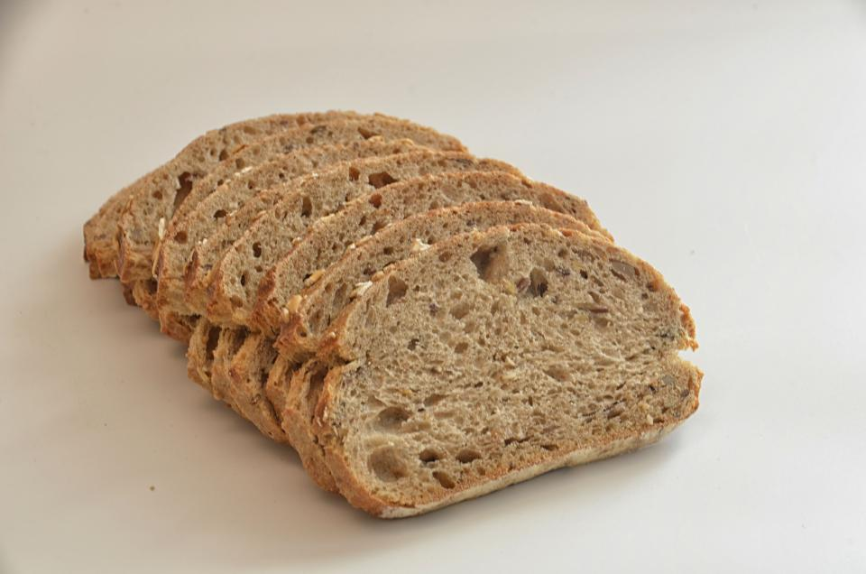
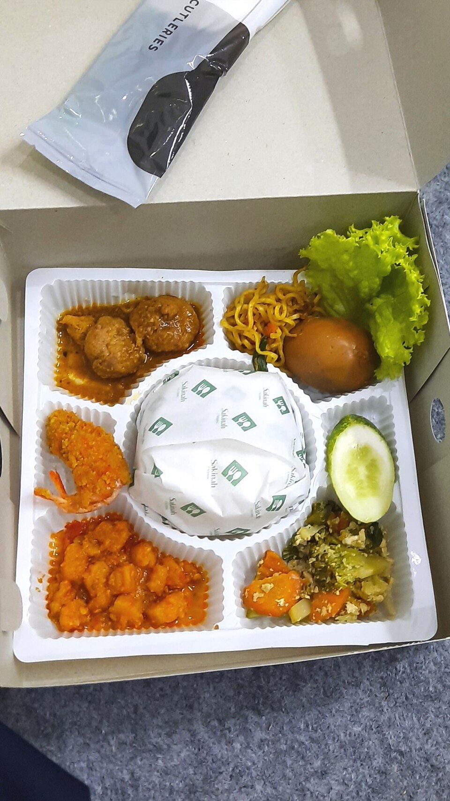
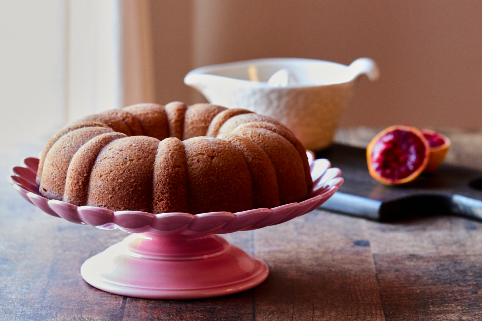

1
Catat
Input surplus makanan Anda dengan mudah.
Pangan lebih berarti
Catat, selamatkan, serahkan, dan pelajari dari surplus makanan. Bersama, kita wujudkan sistem pangan yang lebih adil dan berkelanjutan.
Data berdasarkan catatan pengguna
Input surplus makanan Anda dengan mudah.
Hubungkan dengan pihak yang bisa memanfaatkan.
Makanan diterima oleh komunitas yang membutuhkan.
Lihat dampak dan tingkatkan bersama.
Pangan berputar,
manfaat bertambah
Makanan baik untuk lebih banyak masa depan.
Mengurangi
makanan terbuang
Menguatkan
komunitas lokal
Mendukung
keberlanjutan lingkungan
Membangun Indonesia
yang lebih baik
Karena setiap makanan
punya kesempatan kedua.
Lihat makanan yang sedang menunggu untuk diambil.
Semua informasi di sini bersifat publik. Kami tidak menampilkan nomor telepon atau alamat lengkap untuk melindungi privasi.



Tidak ada surplus yang cocok dengan filter. Coba ubah kategori, waktu, atau jarak.